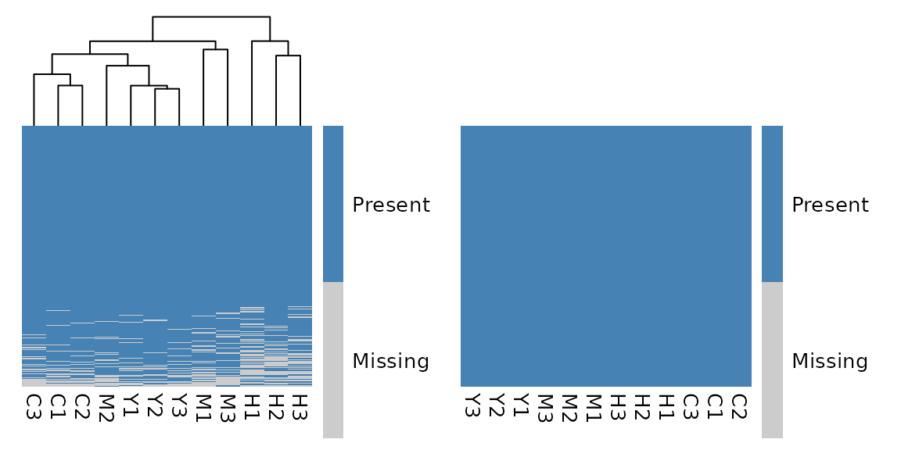

Get Started with glyclean
glyclean.RmdWelcome to the Wild World of Data Preprocessing! 🧬
Every omics data analysis journey begins with the same challenge: taming your raw data. Think of it like preparing ingredients before cooking a gourmet meal – you need to wash, chop, and season everything just right. In the glycomics and glycoproteomics world, this means normalization, missing value handling, and batch effect correction.
Meet glyclean – your Swiss Army knife for
glycoproteomics and glycomics data preprocessing! This package provides
a comprehensive toolkit that takes the guesswork out of data cleaning,
with specialized methods designed specifically for the unique challenges
of glycan analysis.
Important Note: This package is primarily designed
for glyexp::experiment() objects. If you’re new to this
data structure, we highly recommend checking out its
introduction first. We’ll also be using the glyread package to load
our data – it’s the go-to tool in the glycoverse
ecosystem.
Meet Our Star Player: Real Glycoproteomics Data 🌟
Let’s dive in with a real-world dataset that will showcase what
glyclean can do. We’ll use
glyread::read_pglyco3_pglycoquant() to load our data into a
proper glyexp::experiment() object.
exp <- real_experiment |>
mutate_obs(batch = factor(rep(c("A", "B", "C"), 4)))
exp
#>
#> ── Glycoproteomics Experiment ──────────────────────────────────────────────────
#> ℹ Expression matrix: 12 samples, 4262 variables
#> ℹ Sample information fields: group <fct>, batch <fct>
#> ℹ Variable information fields: peptide <chr>, peptide_site <int>, protein <chr>, protein_site <int>, gene <chr>, glycan_composition <comp>, glycan_structure <struct>Let’s peek under the hood and see what we’re working with:
get_var_info(exp)
#> # A tibble: 4,262 × 8
#> variable peptide peptide_site protein protein_site gene glycan_composition
#> <chr> <chr> <int> <chr> <int> <chr> <comp>
#> 1 P08185-N1… NKTQGK 1 P08185 176 SERP… Hex(5)HexNAc(4)Ne…
#> 2 P04196-N3… HSHNNN… 5 P04196 344 HRG Hex(5)HexNAc(4)Ne…
#> 3 P04196-N3… HSHNNN… 5 P04196 344 HRG Hex(5)HexNAc(4)
#> 4 P04196-N3… HSHNNN… 5 P04196 344 HRG Hex(5)HexNAc(4)Ne…
#> 5 P10909-N2… HNSTGC… 2 P10909 291 CLU Hex(6)HexNAc(5)
#> 6 P04196-N3… HSHNNN… 5 P04196 344 HRG Hex(5)HexNAc(4)Ne…
#> 7 P04196-N3… HSHNNN… 6 P04196 345 HRG Hex(5)HexNAc(4)
#> 8 P04196-N3… HSHNNN… 5 P04196 344 HRG Hex(5)HexNAc(4)dH…
#> 9 P04196-N3… HSHNNN… 5 P04196 344 HRG Hex(4)HexNAc(3)
#> 10 P04196-N3… HSHNNN… 5 P04196 344 HRG Hex(4)HexNAc(4)Ne…
#> # ℹ 4,252 more rows
#> # ℹ 1 more variable: glycan_structure <struct>
get_sample_info(exp)
#> # A tibble: 12 × 3
#> sample group batch
#> <chr> <fct> <fct>
#> 1 C1 C A
#> 2 C2 C B
#> 3 C3 C C
#> 4 H1 H A
#> 5 H2 H B
#> 6 H3 H C
#> 7 M1 M A
#> 8 M2 M B
#> 9 M3 M C
#> 10 Y1 Y A
#> 11 Y2 Y B
#> 12 Y3 Y CWhat we have here is a beautiful N-glycoproteomics dataset featuring 500 PSMs (Peptide Spectrum Matches) across 12 samples. These samples come from 3 different batches and represent 4 distinct biological groups – a perfect playground for demonstrating preprocessing techniques!
The Magic Wand: One Function to Rule Them All ✨
Ready for some magic? Watch this:
clean_exp <- auto_clean(exp)
#>
#> ── Normalizing data ──
#>
#> ℹ No QC samples found. Using default normalization method based on experiment type.
#> ℹ Experiment type is "glycoproteomics". Using `normalize_median()`.
#> ✔ Normalization completed.
#>
#> ── Removing variables with too many missing values ──
#>
#> ℹ No QC samples found. Using all samples.
#> ℹ Applying preset "discovery"...
#> ℹ Total removed: 24 (0.56%) variables.
#> ✔ Variable removal completed.
#>
#> ── Imputing missing values ──
#>
#> ℹ No QC samples found. Using default imputation method based on sample size.
#> ℹ Sample size <= 30, using `impute_sample_min()`.
#> ✔ Imputation completed.
#>
#> ── Aggregating data ──
#>
#> ℹ Aggregating to "gfs" level
#> ✔ Aggregation completed.
#>
#> ── Normalizing data again ──
#>
#> ℹ No QC samples found. Using default normalization method based on experiment type.
#> ℹ Experiment type is "glycoproteomics". Using `normalize_median()`.
#> ✔ Normalization completed.
#>
#> ── Correcting batch effects ──
#>
#> ℹ Batch column not found in sample_info. Skipping batch correction.
#> ✔ Batch correction completed.That’s it! Your data is now preprocessed and ready for analysis! 🎉
But Wait, What Just Happened? auto_clean() isn’t
actually magic (sorry to disappoint) – it’s a carefully designed
intelligent pipeline that:
- Analyzes your data: Checks experiment type, sample size, and metadata
- Selects optimal methods: Chooses the best preprocessing strategy for your specific dataset
- Executes the pipeline: Runs everything in the optimal order
Still Like Magic, but With More Control?
Let’s look into the details of what auto_clean() does.
Here is a simplified version of the function:
auto_clean <- function(exp, ...) {
# ... are other arguments, see documentation for more details
if (glyexp::get_exp_type(exp) == "glycoproteomics") {
exp <- auto_normalize(exp, ...)
exp <- auto_remove(exp, ...)
exp <- auto_impute(exp, ...)
exp <- auto_aggregate(exp)
exp <- auto_normalize(exp, ...)
exp <- auto_correct_batch_effect(exp, ...)
} else if (glyexp::get_exp_type(exp) == "glycomics") {
exp <- auto_remove(exp, ...)
exp <- auto_normalize(exp, ...)
exp <- normalize_total_area(exp)
exp <- auto_impute(exp, ...)
exp <- auto_correct_batch_effect(exp, ...)
} else {
stop("The experiment type must be 'glycoproteomics' or 'glycomics'.")
}
exp
}As you can see, auto_clean() calls the following
functions in sequence:
-
auto_normalize(): Automatically normalize the data -
auto_remove(): Automatically remove variables with too many missing values -
auto_impute(): Automatically impute the missing values -
auto_aggregate(): Automatically aggregate the data -
auto_correct_batch_effect(): Automatically correct the batch effects
These functions automatically choose the best method for the given
dataset. For example, if a “group” column exists and there are QC
samples, auto_normalize() will try all normalization
methods and choose the one that best stabilizes the QC samples.
You can make a custom pipeline by calling these functions in different orders:
clean_exp <- exp |>
auto_remove() |>
auto_normalize() |>
auto_impute() |>
auto_aggregate()
#> ℹ No QC samples found. Using all samples.
#> ℹ Applying preset "discovery"...
#> ℹ Total removed: 24 (0.56%) variables.
#> ℹ No QC samples found. Using default normalization method based on experiment type.
#> ℹ Experiment type is "glycoproteomics". Using `normalize_median()`.
#> ℹ No QC samples found. Using default imputation method based on sample size.
#> ℹ Sample size <= 30, using `impute_sample_min()`.
#> ℹ Aggregating to "gfs" levelTaking the Scenic Route: Step-by-Step Preprocessing 🚶♀️
While auto_clean() and other auto_xxx()
functions are fantastic for getting started, you’ll eventually want more
control over your preprocessing pipeline. Let’s explore each step
individually – think of it as learning to cook rather than just ordering
takeout!
Step 1: Normalization – Getting Everyone on the Same Page 📏
Imagine you’re comparing heights of people measured in different units – some in feet, some in meters, some in furlongs (okay, maybe not furlongs). Normalization does the same thing for your omics data, bringing all intensities to a comparable scale.
Available normalization methods in
glyclean:
| Function | Description | Best For |
|---|---|---|
normalize_median() |
Median-based normalization | General use, robust to outliers |
normalize_median_abs() |
Median absolute deviation | When you need extra robustness |
normalize_median_quotient() |
Median quotient method | Compositional data |
normalize_quantile() |
Quantile normalization | When you want identical distributions |
normalize_total_area() |
Total area normalization | Relative abundance data |
normalize_rlr() |
Robust linear regression | Complex batch designs |
normalize_rlrma() |
Robust linear regression with median adjustment | Complex batch designs |
normalize_rlrmacyc() |
Robust linear regression with median adjustment and cyclic smoothing | Complex batch designs |
normalize_loessf() |
LOESS with feature smoothing | Non-linear trends |
normalize_loesscyc() |
LOESS with cyclic smoothing | Cyclic data |
normalize_vsn() |
Variance stabilizing normalization | Heteroscedastic data |
Pro Tips:
- Notice the
byparameter in many functions? This allows stratified normalization within groups – super useful when you have distinct experimental conditions! -
Maximum flexibility: The
byparameter accepts both column names from your sample metadata and direct vectors! This gives you complete control over grouping, even for custom groupings that aren’t stored in your experiment object.
# Example: Using by parameter with a custom vector
# Normalize within custom groups (e.g., based on some external criteria)
custom_groups <- c("A", "A", "B", "B", "C", "C", "A", "A", "B", "B", "C", "C")
normalized_exp <- normalize_median(exp, by = custom_groups)Here we do the median normalization manually:
normed_exp <- normalize_median(exp)Step 2: Variable Filtering – Saying Goodbye to the Unreliable 🧹
Some variables are like that friend who never shows up to plans – they’re missing most of the time and aren’t very helpful. In omics data, variables with too many missing values are often more noise than signal.
Available variable filtering functions in
glyclean:
| Function | Description | Best For |
|---|---|---|
remove_rare() |
Remove variables with too many missing values | General use |
remove_low_var() |
Remove variables with low variance | General use |
remove_low_cv() |
Remove variables with low coefficient of variation | General use |
remove_constant() |
Remove constant variables | General use |
remove_low_expr() |
Remove variables with low expression | General use |
Here we remove variables with more than 50% missing values in all samples:
filtered_exp <- remove_rare(normed_exp, prop = 0.5)
#> ℹ Removed 137 of 4262 (3.21%) variables.Step 3: Imputation – Filling in the Blanks Intelligently 🔮
Here’s where things get scientifically interesting! Missing values in mass spectrometry aren’t randomly distributed – they follow patterns based on the physics and chemistry of the measurement process.
The Science: Missing values in MS-based omics data are typically “Missing Not At Random” (MNAR), meaning they’re related to the intensity of the signal. Low-abundance ions are more likely to be missed, either due to poor ionization efficiency or because they fall below the detection threshold.
Your imputation toolkit:
| Function | Method | Best For |
|---|---|---|
impute_zero() |
Replace with zeros | Quick and simple |
impute_sample_min() |
Sample minimum values | Small datasets |
impute_half_sample_min() |
Half of sample minimum | Conservative approach |
impute_min_prob() |
Probabilistic minimum | Medium datasets |
impute_miss_forest() |
Random Forest ML | Large datasets |
impute_bpca() |
Bayesian PCA | High correlation structure |
impute_ppca() |
Probabilistic PCA | Linear relationships |
impute_sw_knn() |
K-nearest neighbors (Sample-wise) | Local similarity patterns |
impute_fw_knn() |
K-nearest neighbors (Feature-wise) | Local similarity patterns |
impute_svd() |
Singular value decomposition | High correlation structure |
For demonstration, let’s use the simple zero imputation:
imputed_exp <- impute_zero(filtered_exp)Step 4: Aggregation – From Peptides to Glycoforms 🔄
Here’s where glycoproteomics gets uniquely challenging! Search engines typically report results at the PSM or peptide level, but what we really care about are glycoforms – the specific glycan structures attached to specific protein sites.
The Problem: One glycoform can appear multiple times in your data due to:
- Different charge states
- Post-translational modifications
- Missed protease cleavages
- Different peptide sequences covering the same site
The Solution: Intelligent aggregation!
Aggregation levels available:
- “gps”: Glycopeptides with structures (most detailed)
- “gp”: Glycopeptides with compositions
- “gfs”: Glycoforms with structures (recommended default)
- “gf”: Glycoforms with compositions (most condensed)
aggregated_exp <- aggregate(imputed_exp, to_level = "gf")Pro move: Re-normalize after aggregation to account for the new intensity distributions:
aggregated_exp2 <- normalize_median(aggregated_exp)Step 5: Batch Effect Correction – Harmonizing Your Orchestra 🎼
Batch effects are the “different violinists playing the same piece” problem of omics data. Even when following identical protocols, subtle differences in instruments, reagents, or environmental conditions can introduce systematic bias.
The Good News: If your experimental design is well-controlled (conditions distributed across batches), batch effect correction can work wonders!
# To detect batch effects:
p_values <- detect_batch_effect(aggregated_exp2)
#> ℹ Detecting batch effects using ANOVA for 2738 variables...
#> ✔ Batch effect detection completed. 19 out of 2738 variables show significant batch effects (p < 0.05).
p_values[1:5]
#> P08185-N176-Hex(5)HexNAc(4)NeuAc(2) P04196-N344-Hex(5)HexNAc(4)NeuAc(1)
#> 0.6998998 0.3951691
#> P04196-N344-Hex(5)HexNAc(4) P10909-N291-Hex(6)HexNAc(5)
#> 0.4852698 0.3329619
#> P04196-N344-Hex(5)HexNAc(4)NeuAc(2)
#> 0.4907154Here we do not have batch effects, but we will correct it anyway for demonstration.
# To correct batch effects:
corrected_exp <- correct_batch_effect(aggregated_exp2)
#> Found3batches
#> Adjusting for0covariate(s) or covariate level(s)
#> Standardizing Data across genes
#> Fitting L/S model and finding priors
#> Finding parametric adjustments
#> Adjusting the DataStep 6: Protein Expression Adjustment – Separating Signal from Noise 🎯
Here’s a fascinating biological puzzle: when you measure a glycopeptide’s intensity, you’re actually seeing two stories at once!
The Dual Nature Problem: Every glycopeptide intensity is a tale of two factors:
- The protein story: How much of the substrate protein is present
- The glycosylation story: How actively that protein is being glycosylated
It’s like trying to understand applause volume – is the audience bigger, or are they just more enthusiastic?
The Solution: If you’re specifically interested in glycosylation changes (not protein abundance changes), you need to mathematically “subtract out” the protein expression component. Think of it as noise cancellation for biology!
# We don't run the code here because we don't have the protein expression matrix.
adjusted_exp <- adjust_protein(inferred_exp, pro_expr_mat)Important Prerequisites:
- Your protein expression matrix must have the same samples as your glycopeptide data
- The protein expression matrix should be properly preprocessed (good
news: you can use
glycleanfunctions for this too!) - Sample matching needs to be perfect – no mixing apples with oranges!
Pro Tip: Most glyclean functions
happily accept plain matrices as input, so you can preprocess your
protein expression data using the same toolkit. Consistency is key!
Advanced Usage: Beyond glyexp::experiment() Objects
🔧
While this vignette focuses on glyexp::experiment()
objects, glyclean is designed to be flexible and
accommodating to different workflows and data formats.
Working with Plain Matrices
Most glyclean functions also support plain matrices as
input! This means you can use the package’s powerful preprocessing
capabilities even if you’re working with traditional data formats. The
functions intelligently detect your input type and handle it
appropriately.
# Example: Using glyclean with a plain matrix
my_matrix <- matrix(rnorm(100), nrow = 10)
normalized_matrix <- normalize_median(my_matrix)
imputed_matrix <- impute_sample_min(normalized_matrix)Flexible Grouping with Custom Vectors
Many functions in glyclean accept a by
parameter for stratified processing. This parameter offers maximum
flexibility – it accepts both column names from your sample metadata and
direct vectors!
# Using column names (standard approach)
normalized_exp <- normalize_median(exp, by = "group")
# Using custom vectors (advanced approach)
custom_groups <- c("A", "A", "B", "B", "C", "C", "A", "A", "B", "B", "C", "C")
normalized_exp <- normalize_median(exp, by = custom_groups)
# This also works with matrices
normalized_matrix <- normalize_median(my_matrix, by = custom_groups)This gives you complete control over grouping, even for custom groupings that aren’t stored in your experiment object. Perfect for complex experimental designs or external grouping criteria!
Quality Control (QC) 📊
glyclean provides a comprehensive suite of quality
control plotting functions to help you visualize and assess the quality
of your data at various stages of the preprocessing pipeline.
Available QC plotting functions in
glyclean:
| Function | Description | Best For |
|---|---|---|
plot_missing_heatmap() |
Binary heatmap of missing value patterns | Visualizing global missingness structure |
plot_missing_bar() |
Bar plot of missing proportions | Identifying samples/variables with high missingness |
plot_tic_bar() |
Total intensity (TIC) bar plot | Checking for systematic intensity differences between samples |
plot_rank_abundance() |
Protein rank abundance plot | Assessing the dynamic range of detected proteins |
plot_int_boxplot() |
Log2-intensity boxplots | Visualizing data distribution and normalization effects |
plot_rle() |
Relative Log Expression (RLE) boxplots | Detecting sample-wise bias and batch effects |
plot_cv_dent() |
CV density plot | Assessing reproducibility and technical variation |
plot_batch_pca() |
PCA score plot by batch | Visualizing batch effects and sample clustering |
plot_rep_scatter() |
Replicate scatter plots | Checking concordance between replicate samples |
These functions are designed to work seamlessly with
glyexp::experiment() objects and provide consistent,
high-quality visualizations using ggplot2.
For example, you can use plot_missing_heatmap() to
visualize the missing values in your data before and after cleaning:
library(patchwork)
plot_missing_heatmap(exp) + plot_missing_heatmap(clean_exp)
What’s Next?
With your clean data in hand, you’re ready to dive into the exciting world of glyco-omics analysis:
- Differential analysis: Find glycans that change between conditions
- Pathway analysis: Understand biological processes
- Machine learning: Build predictive models
- Visualization: Create stunning plots that tell your data’s story
The glycoverse ecosystem has tools for all of these and
more!